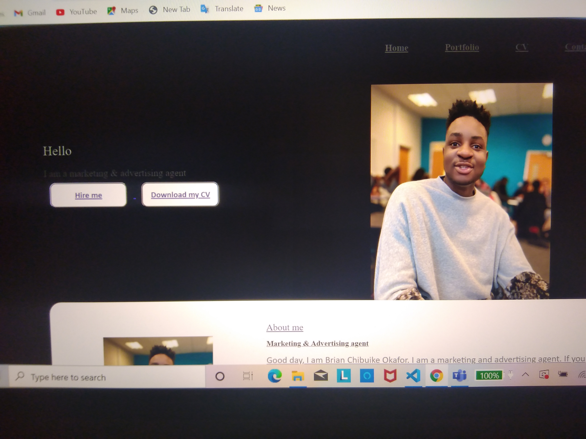
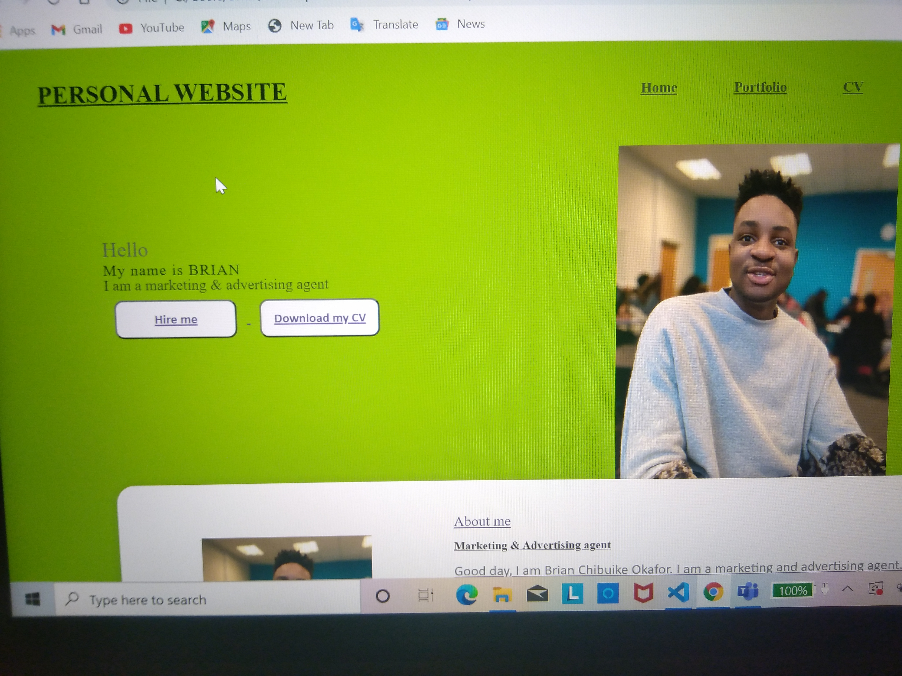
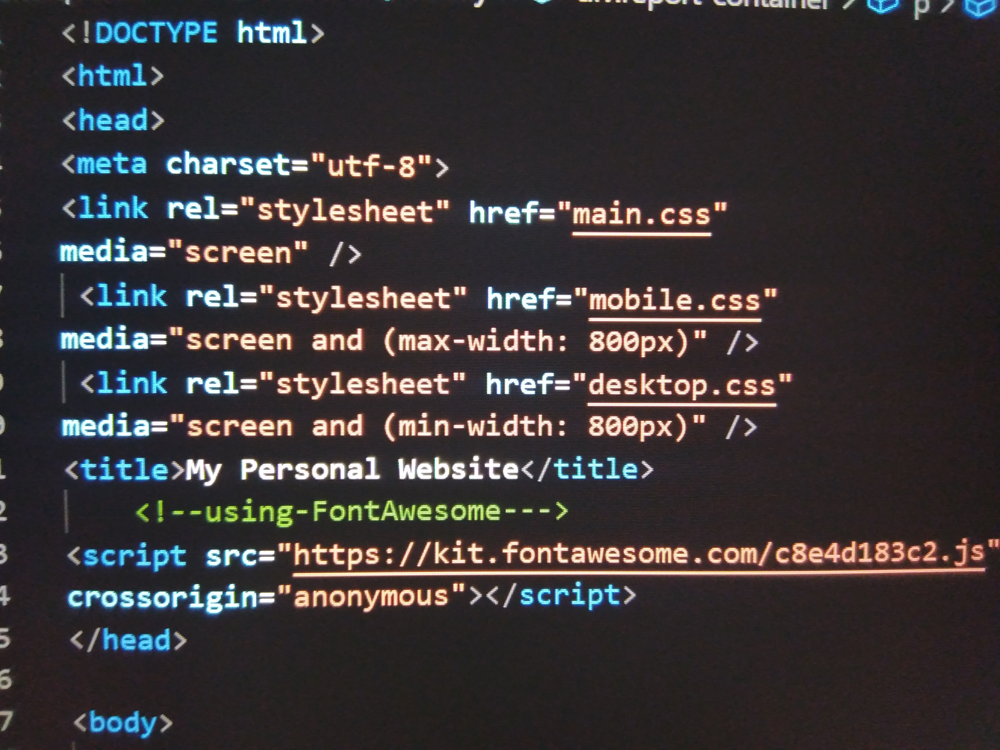
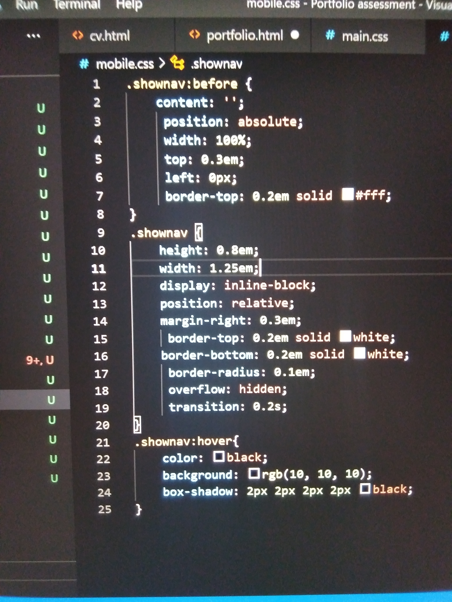

WEB DEVELOPMENT EXPERIENCE
My development experience was not too hard because the lecturer had given us almost everything
required to perform the task. It was easy to add headers, footers lists, anchors, e.t.c. Creating
different branches made my work easy and fastened the process.However, I still had to find solutions
from other reliable sources in areas I found difficult like in adding animations and making the dropdown menu.
DEVELOPMENT REPORT
Firstly, The student tried to understand the task given and searched for samples from the internet of how the portfolio would look like.
In order to have a mind map and I officially started the project on the first week of november.
November 2-8(first week):
This week I started deciding the fonts, colors, pictures that I would use to build my website
and I made a rough sketch of how I wanted my portfolio to look like.
November 9-15(second week):
I started writing my css file and initializing effects that I would want in my portfolio
like the container, columns and buttons. I kept adjusting the container size to make sure it fits well


November 16-22(Third week):
I tried different samples and different font to see which matches better. Initially, I wanted to
use a black layout for my portfolio, then a lemon but I found out that white would be the best fit. I also created a fixed menu at the top to go across pages.
 
November 23-29(Fourth week):
I tried to add transitions, social media bar and button just to make my portfolio more fancy which I achieved with
the help of a youtube video(Going-To Internet, 2018).


November 30- Dec 6(Fifth week):
I had my first commit, I decided to start saving my work because I was done
with the portfolio and home page then I started creating other pages using the same layouts ans similar css codes. I createad a form that has features like
checkboxes, options, radio e.t.c with help from the module slides.
December 7-13(sixth week):
I tried to add the hamburger icon first on my portfolio with the (shownav) code that is available on the module slides.
But I was not able to make it appear only on mobile phone so I had to create another css file and add a conditional statement using screen sizes as to make it appear only on mobile phones.
 
December 14-20(seventh week):
This week I was editting my menu so it will have a different design on mobiles(horizontal on desktops while vertical on mobiles)
and I attempted making a video on how I created my web portfolio but i was not done yet.
Dec 28-Jan 3(seventh week):
I completed my video andI started adding comments and other finishing touches on my work to make my codes easier to understand
Going-To Internet, 2018. How To Create A Complete Personal Portfolio Website Just Using HTML. [video] Available at: [Accessed 25 November 2020].